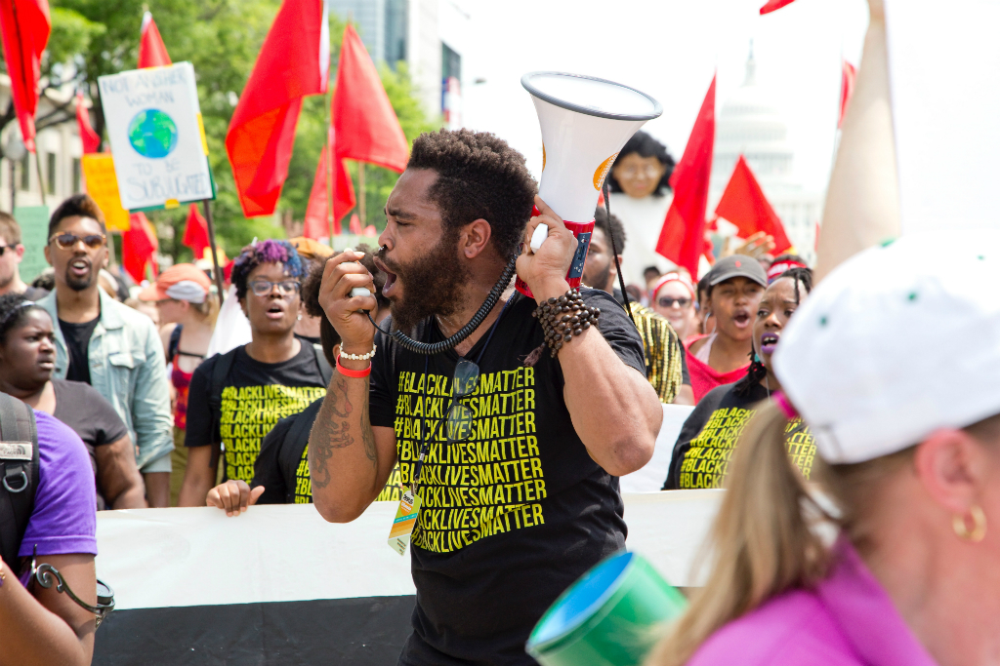
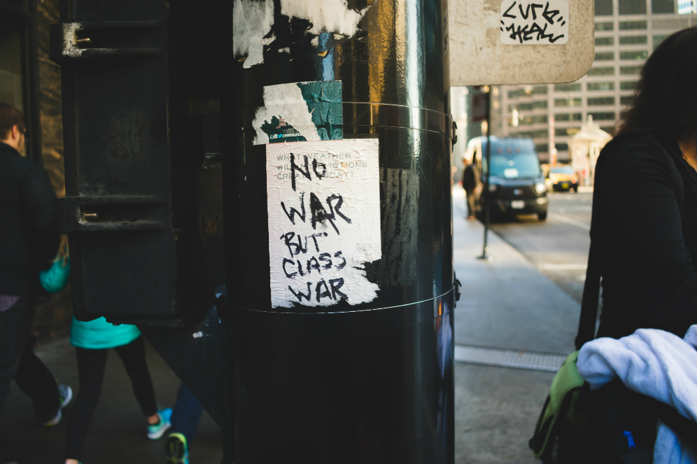

Explainers
Politics and policy
Food
More
Energy
Environment
World
Energy

Silver linings in a dark, dark cloud
Why I got it wrong Mariano Rajoy looks set to continue as Spain's prime minister
This JustIn TrueThough Canada's cap and trade with price floors are great policy
A Hillary victory may open a Pandora's box of bad in 2018 and 2020

Game of Thrones in Egypt
Londoners do not realise their housing crisis is inevitable unless they start building denser and taller
It's the first time my vote for a candidate for President has ever mattered, so I'm voting for...John Kasich
Vox news